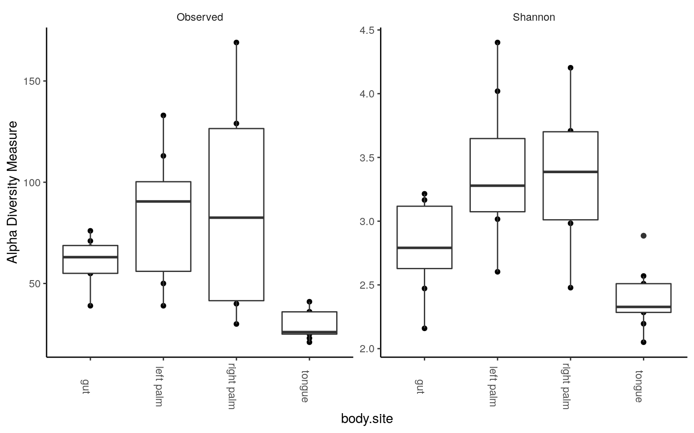

Microbiome analysis in R
BEFORE YOU START: This is a minimal tutorial to visualize microbiome result with R. The tutorial starts from the processed output from metagenomic sequencing, e.g. feature matrix. It’s suitable for someone who wants to try a hand-on analysis, especially for R users, helping you understand the basic concepts of microbiome outputs. This tutorial will only give inspirations for some common analysis (alpha/beta diversity, differential abundance analysis)， but it shall be adequate if you only consider microbiome as a sub-story.
- The demo data-set comes from the QIIME 2 tutorial - Moving Pictures.
- This is a beginner tutorial. You still have time to run away if you’re an experienced bioinformatician. 👻
What you will work on
After sequencing, you will get some (fastq/fast5/h5) files from the sequencing. These files contain the base information e.g. quality of collected reads. If the sequenced sample is a mixed community, i.e. metagenomic sequencing, . There are plenty of strategies e.g. Amplicon/Shotgun sequencing to utilize these reads.
- Feature table (Necessary), a matrix containing the abundances of detected microbial features(OTUs, ASVs, microbial markers)
- Taxonomy table (Optional), an array indicating the taxonomy of the features, which can be integrated in biom format.
- Phylogenetic tree (Optional), a phylogenetic tree indicating the similarity of microbial features, potentially used when calculating phylogentic diversity metrics (optionally integrated in biom format).
- Metadata, a matrix containing the infomation for analysis (optionally integrated in biom format).
Preparation
If you are using QIIME 2 pipeline, qza(zipped format named by QIIME 2) files are what you needed. Below are the data from Moving Pictures.
## rooted-tree.qza
## sample-metadata.tsv
## table.qza
## taxonomy.qzaAs the R buildins didn’t accept .qza or .biom files, here I give a example to transform these qza files to a R-like format. You need QIIME 2 (qiime2-2020.11) installed.
conda activate qiime2-2020.11
for i in *.qza; do
qiime tools export --input-path $i --output-path .
done
biom convert -i feature-table.biom -o feature-table.tsv --to-tsv
conda deactivateAnd you will have
## feature-table.tsv
## sample-metadata.tsv
## taxonomy.tsv
## tree.nwkInstall and load relevant packages: phyloseq, tidyverse, vegan, DESeq2 , ANCOMBC, ComplexHeatmap. You can copy the code below.
p1 <- c("tidyverse", "vegan", "BiocManager")
p2 <- c("phyloseq", "ANCOMBC", "DESeq2", "ComplexHeatmap")
load_package <- function(p) {
if (!requireNamespace(p, quietly = TRUE)) {
ifelse(p %in% p1,
install.packages(p, repos = "http://cran.us.r-project.org/"),
BiocManager::install(p))
}
library(p, character.only = TRUE, quietly = TRUE)
}
invisible(lapply(c(p1,p2), load_package))Build phyloseq project
Load data to build a phyloseq project, phyloseq description is here.
otu <- read.table(file = "feature-table.tsv", sep = "\t", header = T, row.names = 1,
skip = 1, comment.char = "")
taxonomy <- read.table(file = "taxonomy.tsv", sep = "\t", header = T ,row.names = 1)
# clean the taxonomy, Greengenes format
tax <- taxonomy %>%
select(Taxon) %>%
separate(Taxon, c("Kingdom", "Phylum", "Class", "Order", "Family", "Genus", "Species"), "; ")
tax.clean <- data.frame(row.names = row.names(tax),
Kingdom = str_replace(tax[,1], "k__",""),
Phylum = str_replace(tax[,2], "p__",""),
Class = str_replace(tax[,3], "c__",""),
Order = str_replace(tax[,4], "o__",""),
Family = str_replace(tax[,5], "f__",""),
Genus = str_replace(tax[,6], "g__",""),
Species = str_replace(tax[,7], "s__",""),
stringsAsFactors = FALSE)
tax.clean[is.na(tax.clean)] <- ""
tax.clean[tax.clean=="__"] <- ""
for (i in 1:nrow(tax.clean)){
if (tax.clean[i,7] != ""){
tax.clean$Species[i] <- paste(tax.clean$Genus[i], tax.clean$Species[i], sep = " ")
} else if (tax.clean[i,2] == ""){
kingdom <- paste("Unclassified", tax.clean[i,1], sep = " ")
tax.clean[i, 2:7] <- kingdom
} else if (tax.clean[i,3] == ""){
phylum <- paste("Unclassified", tax.clean[i,2], sep = " ")
tax.clean[i, 3:7] <- phylum
} else if (tax.clean[i,4] == ""){
class <- paste("Unclassified", tax.clean[i,3], sep = " ")
tax.clean[i, 4:7] <- class
} else if (tax.clean[i,5] == ""){
order <- paste("Unclassified", tax.clean[i,4], sep = " ")
tax.clean[i, 5:7] <- order
} else if (tax.clean[i,6] == ""){
family <- paste("Unclassified", tax.clean[i,5], sep = " ")
tax.clean[i, 6:7] <- family
} else if (tax.clean[i,7] == ""){
tax.clean$Species[i] <- paste("Unclassified ",tax.clean$Genus[i], sep = " ")
}
}
metadata <- read.table(file = "sample-metadata.tsv", sep = "\t", header = T, row.names = 1)
OTU = otu_table(as.matrix(otu), taxa_are_rows = TRUE)
TAX = tax_table(as.matrix(tax.clean))
SAMPLE <- sample_data(metadata)
TREE = read_tree("tree.nwk")
# merge the data
ps <- phyloseq(OTU, TAX, SAMPLE,TREE)The phyloseq project looks like
## phyloseq-class experiment-level object
## otu_table() OTU Table: [ 770 taxa and 34 samples ]
## sample_data() Sample Data: [ 34 samples by 8 sample variables ]
## tax_table() Taxonomy Table: [ 770 taxa by 7 taxonomic ranks ]
## phy_tree() Phylogenetic Tree: [ 770 tips and 768 internal nodes ]Check the sequencing depth with rarefaction curve

The sequencing depth is 4523.735 ± 2933.477 (mean ± SD), ranging from 897 to 9820.
As we could see, a sequencing depth of 1000 has captured most taxonomic tags. To minimize the bias from varying sequenicng depth, it’s recommended to do a rarefaction before calculating diversity metrics. However, it’s not always the rule of thumb. To keep consistence with the QIIME 2 tutorial, we rarefy (resample) all samples to the sequencing depth of 1103. (As it’s random sampling process, the result is unlikely to be identical as the QIIME 2 tutorial)
set.seed(111) # keep result reproductive
ps.rarefied = rarefy_even_depth(ps, rngseed=1, sample.size=1103, replace=F)After rarefaction, the phyloseq looks like
## phyloseq-class experiment-level object
## otu_table() OTU Table: [ 666 taxa and 31 samples ]
## sample_data() Sample Data: [ 31 samples by 8 sample variables ]
## tax_table() Taxonomy Table: [ 666 taxa by 7 taxonomic ranks ]
## phy_tree() Phylogenetic Tree: [ 666 tips and 664 internal nodes ]The sequencing depth of all remaining 31 samples is 1103.
Alpha diversity
Alpha diversity metrics assess the species diversity within the ecosystems, telling you how diverse a sequenced community is.
plot_richness(ps.rarefied, x="body.site", measures=c("Observed", "Shannon")) +
geom_boxplot() +
theme_classic() +
theme(strip.background = element_blank(), axis.text.x.bottom = element_text(angle = -90))
We could see tongue samples had the lowest alpha diversity. Next, some statistics: pairwise test with Wilcoxon rank-sum test, with fdr correction. For the number of observed tags,
rich = estimate_richness(ps.rarefied, measures = c("Observed", "Shannon"))
wilcox.observed <- pairwise.wilcox.test(rich$Observed,
sample_data(ps.rarefied)$body.site,
p.adjust.method = "BH")
tab.observed <- wilcox.observed$p.value %>%
as.data.frame() %>%
tibble::rownames_to_column(var = "group1") %>%
gather(key="group2", value="p.adj", -group1) %>%
na.omit()
tab.observedSimilarly for Shannon diversity,
Beta diversity
Beta diversity assess the dissimilarity between ecosystem, telling you to what extend one community is different from another. Here are some demo code using Bray Curtis and binary Jaccard distance. I personally do not recommend direct use of the UniFrac metrics supported by phyloseq, especially when your tree is not dichotomous. This will happen when some children branches lose their parents during rarefaction ðŸ˜. You need to re-root your tree in e.g. QIIME 2 if you run into this case, see here. Besides, the UniFrac calculation by phyloseq has not been checked with the source code, see the posts in phyloseq issues and QIIME 2 forum. So it’s safer to use QIIME 2 version for now given that both QIIME and UniFrac concept came from the Knight lab.
PCoA and PERMANOVA/ADONIS
- Bray curtis
distance is in overlapped use, so we specify the package by phyloseq::distance
dist = phyloseq::distance(ps.rarefied, method="bray")
ordination = ordinate(ps.rarefied, method="PCoA", distance=dist)
plot_ordination(ps.rarefied, ordination, color="body.site") +
theme_classic() +
theme(strip.background = element_blank())PERMANOVA/ADONIS
metadata <- data.frame(sample_data(ps.rarefied))
test.adonis <- adonis(dist ~ body.site, data = metadata)
test.adonis <- as.data.frame(test.adonis$aov.tab)
test.adonisPAIRWISE PERMANOVA
cbn <- combn(x=unique(metadata$body.site), m = 2)
p <- c()
for(i in 1:ncol(cbn)){
ps.subs <- subset_samples(ps.rarefied, body.site %in% cbn[,i])
metadata_sub <- data.frame(sample_data(ps.subs))
permanova_pairwise <- adonis(phyloseq::distance(ps.subs, method = "bray") ~ body.site,
data = metadata_sub)
p <- c(p, permanova_pairwise$aov.tab$`Pr(>F)`[1])
}
p.adj <- p.adjust(p, method = "BH")
p.table <- cbind.data.frame(t(cbn), p=p, p.adj=p.adj)
p.tableAs we could see, there’s no difference in composition between the left and right palm samples. Similar result can be found using binary Jaccard metrics. Adjust the dist = distance(ps.rarefied, method="jaccard", binary = TRUE) and permanova_pairwise <- adonis(distance(ps.subs, method="jaccard", binary = TRUE) ~ body.site, data = metadata_sub), give it a try
NMDS and ANOSIM
Given that the microbiome data is compositional and sparse, non-parametric multidimentional scaling (NMDS) is favored sometimes, which usually alinged with ANOSIM test.
- Binary Jaccard
dist = phyloseq::distance(ps.rarefied, method="jaccard", binary = TRUE)
ordination = ordinate(ps.rarefied, method="NMDS", distance=dist)plot_ordination(ps.rarefied, ordination, color="body.site") +
theme_classic() +
theme(strip.background = element_blank())
ANOSIM
##
## Call:
## anosim(x = dist, grouping = metadata$body.site)
## Dissimilarity: binary jaccard
##
## ANOSIM statistic R: 0.785
## Significance: 0.001
##
## Permutation: free
## Number of permutations: 999PAIRWISE ANOSIM
cbn <- combn(x=unique(metadata$body.site), m = 2)
p <- c()
for(i in 1:ncol(cbn)){
ps.subs <- subset_samples(ps.rarefied, body.site %in% cbn[,i])
metadata_sub <- data.frame(sample_data(ps.subs))
permanova_pairwise <- anosim(phyloseq::distance(ps.subs, method="jaccard", binary = TRUE),
metadata_sub$body.site)
p <- c(p, permanova_pairwise$signif[1])
}
p.adj <- p.adjust(p, method = "BH")
p.table <- cbind.data.frame(t(cbn), p=p, p.adj=p.adj)The NMDS and ANOSIM result were similar to that from PCoA and ADONIS.
Abundance bar plot
Here the demos use un-rarefied table to show all detected tags.
- Phylum
ps.rel = transform_sample_counts(ps, function(x) x/sum(x)*100)
# agglomerate taxa
glom <- tax_glom(ps.rel, taxrank = 'Phylum', NArm = FALSE)
ps.melt <- psmelt(glom)
# change to character for easy-adjusted level
ps.melt$Phylum <- as.character(ps.melt$Phylum)
ps.melt <- ps.melt %>%
group_by(body.site, Phylum) %>%
mutate(median=median(Abundance))
# select group median > 1
keep <- unique(ps.melt$Phylum[ps.melt$median > 1])
ps.melt$Phylum[!(ps.melt$Phylum %in% keep)] <- "< 1%"
#to get the same rows together
ps.melt_sum <- ps.melt %>%
group_by(Sample,body.site,Phylum) %>%
summarise(Abundance=sum(Abundance))
ggplot(ps.melt_sum, aes(x = Sample, y = Abundance, fill = Phylum)) +
geom_bar(stat = "identity", aes(fill=Phylum)) +
labs(x="", y="%") +
facet_wrap(~body.site, scales= "free_x", nrow=1) +
theme_classic() +
theme(strip.background = element_blank(),
axis.text.x.bottom = element_text(angle = -90))
< 1% indicates rare taxa in each group, with median relative abundance < 1%.
- Genus
ps.rel = transform_sample_counts(ps, function(x) x/sum(x)*100)
# agglomerate taxa
glom <- tax_glom(ps.rel, taxrank = 'Genus', NArm = FALSE)
ps.melt <- psmelt(glom)
# change to character for easy-adjusted level
ps.melt$Genus <- as.character(ps.melt$Genus)
ps.melt <- ps.melt %>%
group_by(body.site, Genus) %>%
mutate(median=median(Abundance))
# select group mean > 1
keep <- unique(ps.melt$Genus[ps.melt$median > 2.5])
ps.melt$Genus[!(ps.melt$Genus %in% keep)] <- "< 2.5%"
#to get the same rows together
ps.melt_sum <- ps.melt %>%
group_by(Sample,body.site,Genus) %>%
summarise(Abundance=sum(Abundance))
ggplot(ps.melt_sum, aes(x = Sample, y = Abundance, fill = Genus)) +
geom_bar(stat = "identity", aes(fill=Genus)) +
labs(x="", y="%") +
facet_wrap(~body.site, scales= "free_x", nrow=1) +
theme_classic() +
theme(legend.position = "right",
strip.background = element_blank(),
axis.text.x.bottom = element_text(angle = -90))
< 2.5% indicates rare taxa in each group, with median relative abundance < 2.5%.
Differential abundance analysis
Differential abundance analysis allows you to identify differentially abundant taxa between groups. There’s many methods, here two commonly used ones are given as examples. Features are collapsed at the species-level prior to the calculation.
sample_data(ps)$body.site <- as.factor(sample_data(ps)$body.site) # factorize for DESeq2
ps.taxa <- tax_glom(ps, taxrank = 'Species', NArm = FALSE)Let’s see what features are enriched differentially between tongue and gut.
DESeq2
DESeq2 is a software designed for RNA-seq, but also used in microbiome analysis, and the detailed use of DESeq2 can be found here. However, you’re usually troubled by the “zero†issues in microbiome analysis. A pseudo count is added to avoid the issues of logarithm transformation.
ps.taxa.pse <- ps.taxa
otu_table(ps.taxa.pse) <- otu_table(ps.taxa) + 1
# pairwise comparison between gut and tongue
ps.taxa.pse.sub <- subset_samples(ps.taxa.pse, body.site %in% c("gut", "tongue"))
ds = phyloseq_to_deseq2(ps.taxa.pse.sub, ~ body.site)
ds = DESeq(ds, test="Wald", fitType="parametric")
alpha = 0.05
res = results(ds, alpha=alpha)
res = res[order(res$padj, na.last=NA), ]
taxa_sig = rownames(res[1:20, ]) # select bottom 20 with lowest p.adj values
ps.taxa.rel <- transform_sample_counts(ps, function(x) x/sum(x)*100)
ps.taxa.rel.sig <- prune_taxa(taxa_sig, ps.taxa.rel)
# Only keep gut and tongue samples
ps.taxa.rel.sig <- prune_samples(colnames(otu_table(ps.taxa.pse.sub)), ps.taxa.rel.sig)Visualize these biomarkers in heatmap using R package ComplexHeatmap, which is a improved package on the basis of pheatmap. A detailed reference book about ComplexHeatmap is here. I like it because of its flexibility relative to built-in heatmap(), gplots::heatmap.2(), pheatmap::pheatmap() and heatmap3::heatmap(). However, the mentioned ones can also be adopted given the same theory of heatmap. The added function ComplexHeatmap::pheatmap inherited most settings of pheatmap, so I adopt it to make code easily understood.
To make pheatmap specfic, the package is specified as ComplexHeatmap::pheatmap
matrix <- as.matrix(data.frame(otu_table(ps.taxa.rel.sig)))
rownames(matrix) <- as.character(tax_table(ps.taxa.rel.sig)[, "Species"])
metadata_sub <- data.frame(sample_data(ps.taxa.rel.sig))
# Define the annotation color for columns and rows
annotation_col = data.frame(
Subject = as.factor(metadata_sub$subject),
`Body site` = as.factor(metadata_sub$body.site),
check.names = FALSE
)
rownames(annotation_col) = rownames(metadata_sub)
annotation_row = data.frame(
Phylum = as.factor(tax_table(ps.taxa.rel.sig)[, "Phylum"])
)
rownames(annotation_row) = rownames(matrix)
# ann_color should be named vectors
phylum_col = RColorBrewer::brewer.pal(length(levels(annotation_row$Phylum)), "Paired")
names(phylum_col) = levels(annotation_row$Phylum)
ann_colors = list(
Subject = c(`subject-1` = "red", `subject-2` = "blue"),
`Body site` = c(gut = "purple", tongue = "yellow"),
Phylum = phylum_col
)
ComplexHeatmap::pheatmap(matrix, scale= "row",
annotation_col = annotation_col,
annotation_row = annotation_row,
annotation_colors = ann_colors)
ANCOM-BC
Here I will introduce another statistical method specially designed for Microbiome data. I like its theory behind - sequencing is a process of sampling. For a microbial community under adequate sequencing, the ratio of two specific taxa should be theoretically the “same†between their profiled relative abundances and the absolute abundance. The theory can be found in their published paper. ANCOM is one recommended method by QIIME 2 and similar theory is also adopted in another QIIME 2 plugin- Geneiss. ANCOM is originally written in R and hosted in NIH, but the link expired now. The q2-compositon plugin is one accessible version to my knowledge. In that QIIME has no R API, I recommend to use improved ANCOM version e.g. ANCOM 2 and ANCOM-BC if you only eat R code. These two have not been included in QIIME 2 and maintained by the lab members of the original ANCOM paper. The key differences between ANCOM 2 and ANCOM are how they treat zeros and introduced process of repeated data, and more can be found in the paper. Considering the structure of code, ANCOM 2 is more like a wrapper function of ANCOM, especially relative to ANCOM-BC. ANCOM-BC inherited the methodology of preprocessing zeros in ANCOM but estimated the sampling bias by linear regression. Besides, it provides p values and according to the author, it is blazingly fast while controlling the FDR and maintaining adequate power as ANCOM. ANCOM-BC is maintained at bioconductor, and a vignette is here. It’s worth noting that ANCOM-BC is in development and now (Jan 2021) only support testing for co-variates and global test.
So we adopt ANCOM-BC to repeat the test above. And here it takes gut label as a reference to other body site groups.
# pairwise comparison between gut and tongue
ps.taxa.sub <- subset_samples(ps.taxa, body.site %in% c("gut", "tongue"))
# ancombc
out <- ancombc(phyloseq = ps.taxa.sub, formula = "body.site",
p_adj_method = "holm", zero_cut = 0.90, lib_cut = 1000,
group = "body.site", struc_zero = TRUE, neg_lb = TRUE, tol = 1e-5,
max_iter = 100, conserve = TRUE, alpha = 0.05, global = TRUE)
res <- out$res
# select the bottom 20 with lowest p values
res.or_p <- rownames(res$q_val[,"body.sitetongue"])[base::order(res$q_val[,"body.sitetongue"])]
taxa_sig <- res.or_p[1:20]
ps.taxa.rel.sig <- prune_taxa(taxa_sig, ps.taxa.rel)
# Only keep gut and tongue samples
ps.taxa.rel.sig <- prune_samples(colnames(otu_table(ps.taxa.sub)), ps.taxa.rel.sig)Repeat heatmap script for the ANCOM result
matrix <- as.matrix(data.frame(otu_table(ps.taxa.rel.sig)))
rownames(matrix) <- as.character(tax_table(ps.taxa.rel.sig)[, "Species"])
metadata_sub <- data.frame(sample_data(ps.taxa.rel.sig))
# Define the annotation color for columns and rows
annotation_col = data.frame(
Subject = as.factor(metadata_sub$subject),
`Body site` = as.factor(metadata_sub$body.site),
check.names = FALSE
)
rownames(annotation_col) = rownames(metadata_sub)
annotation_row = data.frame(
Phylum = as.factor(tax_table(ps.taxa.rel.sig)[, "Phylum"])
)
rownames(annotation_row) = rownames(matrix)
# ann_color should be named vectors
phylum_col = RColorBrewer::brewer.pal(length(levels(annotation_row$Phylum)), "Paired")
names(phylum_col) = levels(annotation_row$Phylum)
ann_colors = list(
Subject = c(`subject-1` = "red", `subject-2` = "blue"),
`Body site` = c(`gut` = "purple", tongue = "yellow"),
Phylum = phylum_col
)
ComplexHeatmap::pheatmap(matrix, scale= "row",
annotation_col = annotation_col,
annotation_row = annotation_row,
annotation_colors = ann_colors)The mini-tour shall end here. In that you know how to import the microbiome data in R, you can continue exploring your data according to diverse tutorials including phyloseq from U.S., ampvis2 from Denmark, and MicrobiotaProcess from China.
If you want a GUI software for your microbiome analysis, you may like microbiomeanalyst, which was recently published on Nature protocol. I haven’t tried it yet in that I hate mouse clicking.😱
Copyright © 2021 KU FOOD. All rights reserved.